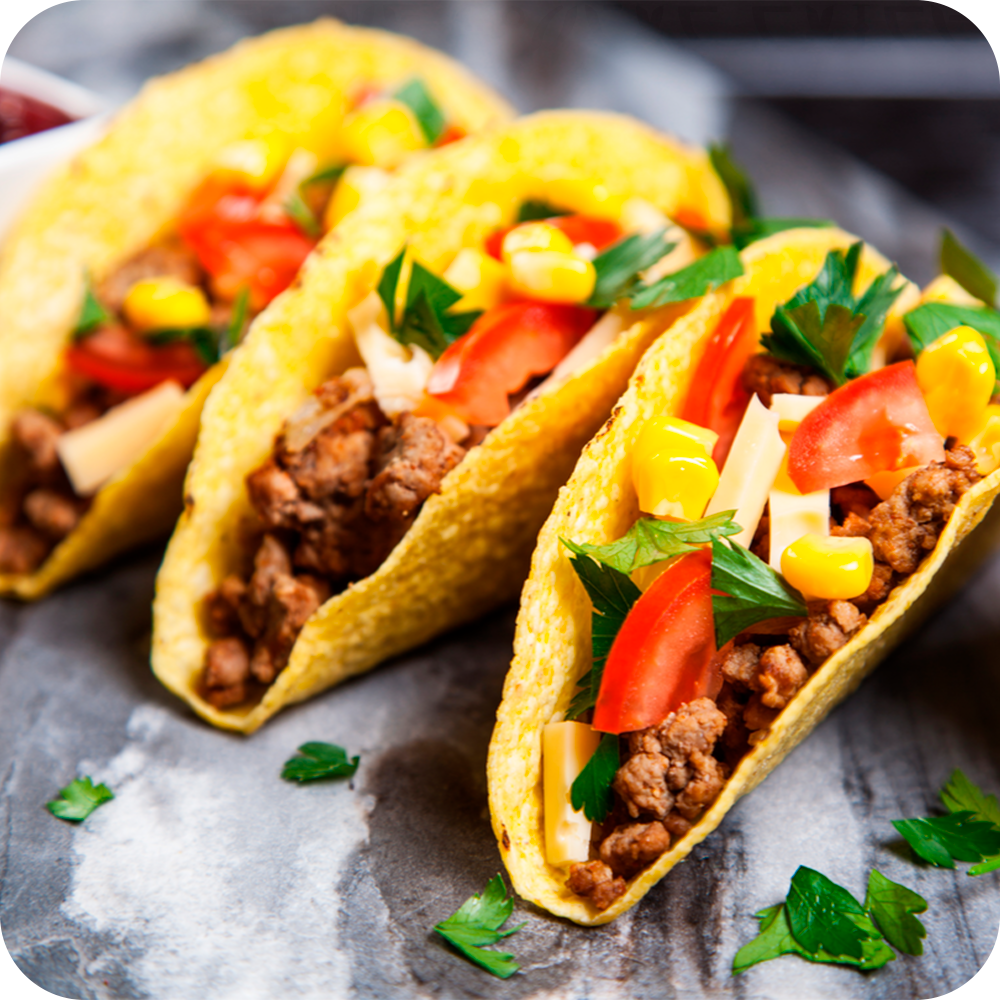
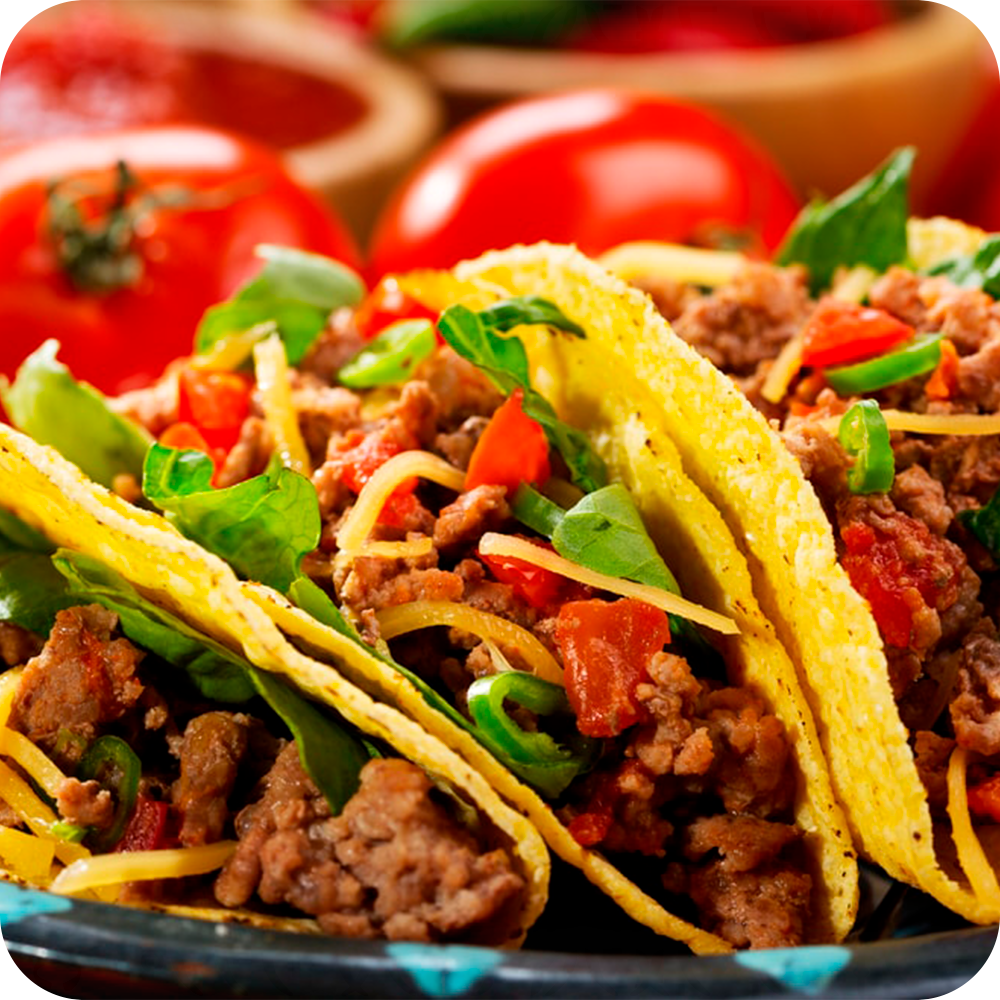

Taco Mexicano
RECEITA
INGREDIENTES
- 1 pacote médio de massa para pastel
- 400 g de carne de moida
- 1 colher (chá) de óleo
- 2 cebolas médias picadas
- Pimenta a gosto
- 4 colheres (sopa) de extrato de tomate
- 2 colheres (sopa) de mostarda
- 2 xícaras (chá) de feijão preto cozido
- 150 g de queijo mussarela
- Sal a gosto
- 1 abacate médio
- 2 tomates médios picados
- 1 cebola média picada
- Suco de 1 limão médio
- 3 colheres (sopa) de azeite de oliva
- 1/2 maço de alface picado
- 250 g de queijo mussarela picado
- 4 tomates sem pele picados
MODO DE PREPARO
Tortilhas
Sapeque 1 masas de pastel por vez em uma frigideira
antiaderente, até a mesma ficar tostada.
Chilli
1. Doure a cebola, depois a carne moída, em seguida coloque
o extrato de tomate, a mostarda, pimenta, sal e diexe apurar
por 10 minutos aproximadamente.
2. Bata no liquidificador com um pouco do próprio caldo o feijão.
3. Em seguida, quando o molho estiver quase seco, despeje o
feijão e após o queijo mussarela.
4. Deixe cozer até ficar com consistência de pasta, bem grossa.
5. O Chilli deve ficar bem picante. Sirva quente.
Guacamole
1. Retire a polpa do abacate. Bata todos os ingredientes
no liquidificador.
Modo de servir
1. Coloque cada item em cumbucas, inclusive o alface,
o tomate picado e o quiejo picado.
2. Monte o Taco: primeiro, com a massa tostada, coloque
uma colher de sopa do chilli, em seguida o queijo para
derreter, após o tomate picado, o alface e por ultimo uma
colher de sopa rasa de guacamole.
3. Feche o taco, como uma tortilha ou pastel.

